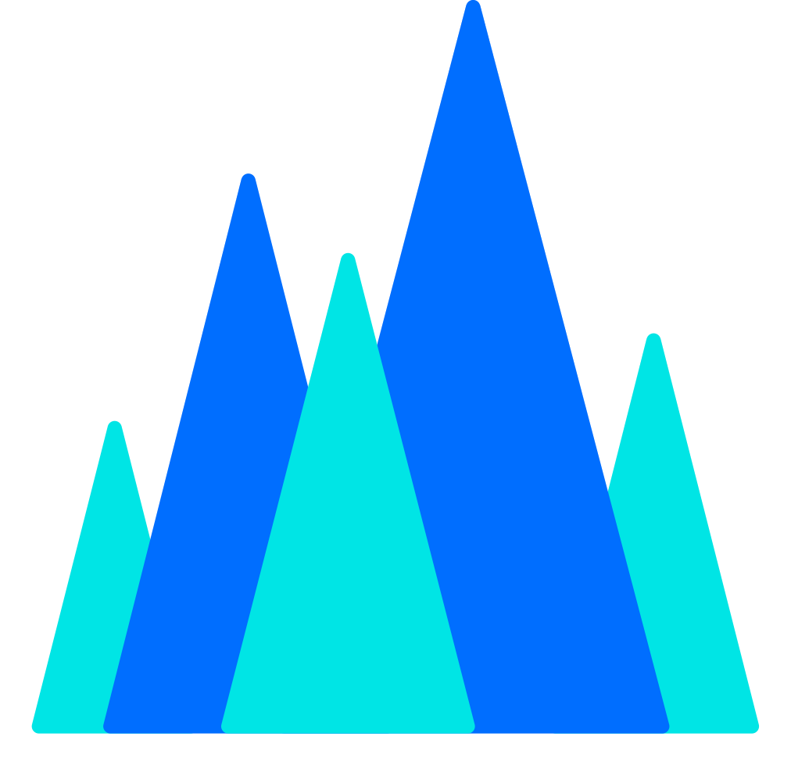

为重度 AI 用户打造的用量看板
Zenmux / DeepSeek / Kimi Code / 智谱 GLM / 火山方舟 / Tavily，配额与余额两种形态统一抽象，架构可随时扩展新源。
进度条、余额文本、品牌徽章三种形态，逐源开关；多显示器深浅外观自动适配。
全局间隔（30s~5m）+ 每源独立 ×1~×10 倍率，精细控制请求频率；限流端点内置客户端节流。
进度条叠加预测阴影——「上游窗口用满后本窗口将达到的位置」，提前预警而非事后补救。
API Key 与全部配置仅存本机，不上传任何服务器；纯菜单栏运行，空闲内存约 20MB。
设置面板拖动源卡片即可调整区块顺序，即时生效；详情区块一键折叠展开。
六家平台，一套体验
5H / 7D 双窗口配额 · 月度上限与汇率 · 双域名切换 · 详情可折叠
账户余额实时展示 · 本地整点采样差值推算今日用量，充值自动重置基线
5 小时滚动频控 + 7 天周额度双窗口 · 状态四档对应真实频控
5H + 周限额 · 国内版（bigmodel.cn）/ 国际版（z.ai）一键切换

Agent Plan AFP 配额（5H / 7D / 1M）· AK/SK V4 签名认证
月度 Credits 配额 + 端点消耗明细 · 客户端节流适配端点限流